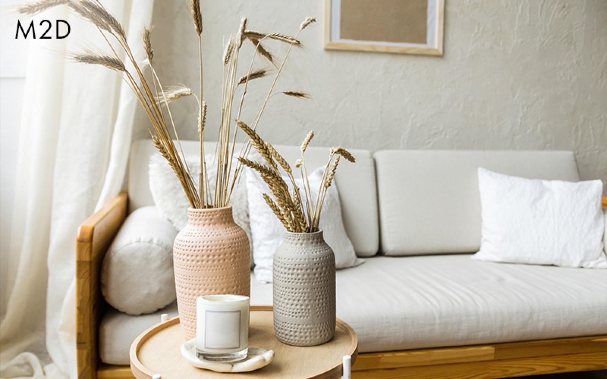
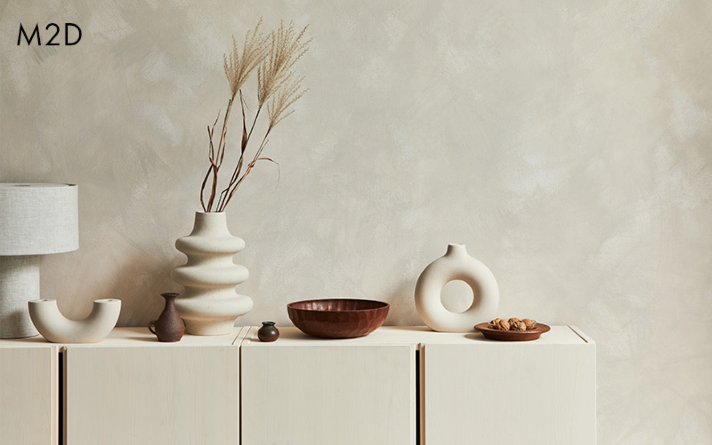
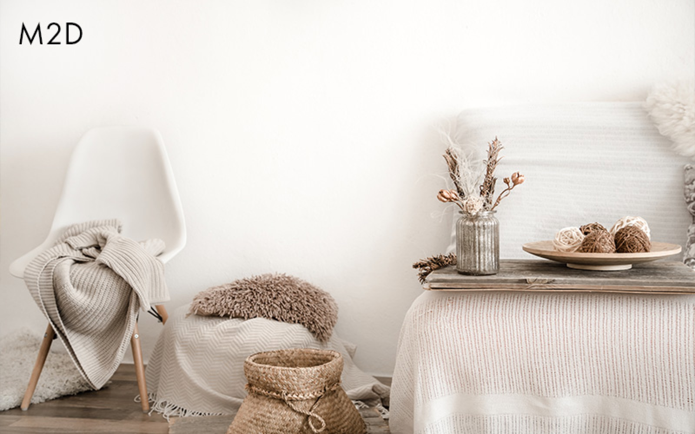
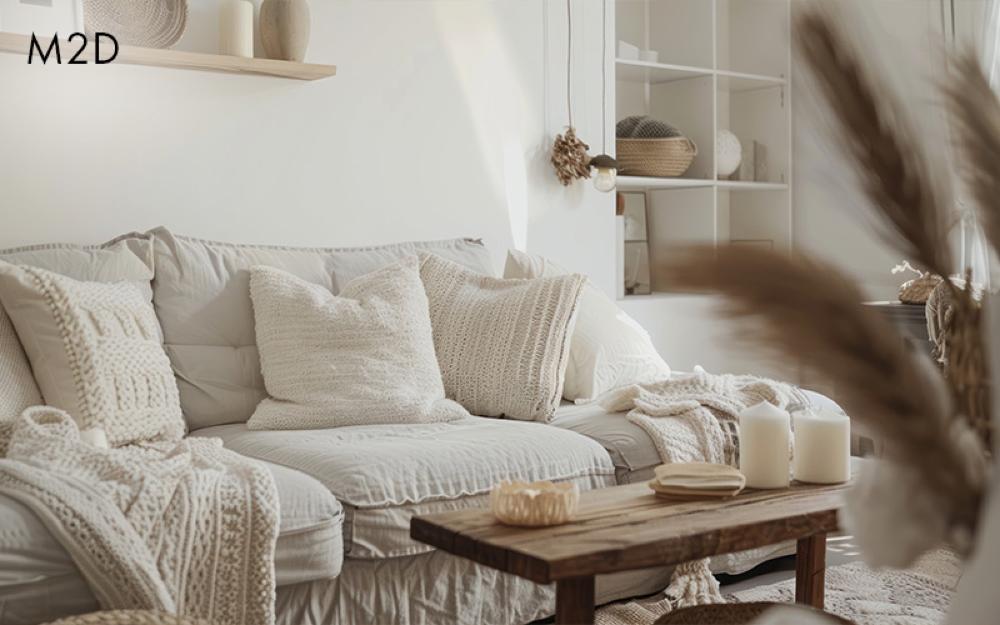
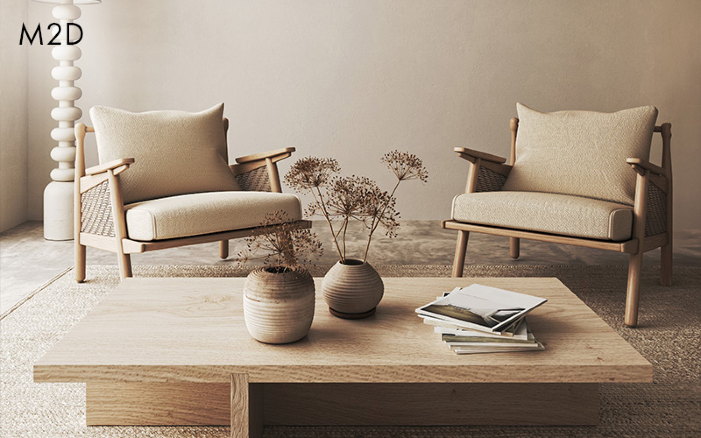
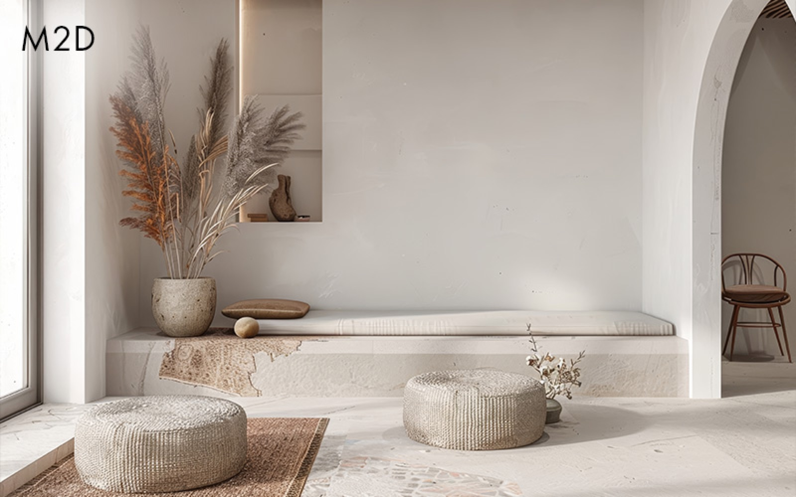

Key Takeaways
Learn how to combine the elegance of Japandi with the warmth of wabi-sabi.
Discover how natural materials, neutral colours, and decluttered spaces help find a balance between the two styles.
The ultimate goal in mastering Japandi-wabi-sabi is not perfection, but purpose.

Designing your home is not just about aesthetics; you should also consider how the space makes you feel. Two styles that beautifully encompass this principle are wabi-sabi and Japandi. Both value simplicity and calm, yet they originate from different cultural contexts. Japandi interiors are a blend of Scandinavian and Japanese minimalism, while wabi-sabi is rooted in traditional Japanese philosophy that celebrates imperfection and transience.
Despite their differences, these two styles complement each other remarkably well. With the right design strategies, they can come together to create a home that feels grounded, authentic, and timeless. This article explores how you can bring both worlds into your home interior design, especially in compact spaces like HDB flats.
1. Understand the Core of Each Style

To blend styles effectively, you need to know what each one stands for.
Wabi-sabi is all about finding beauty in imperfection. It embraces aged, weathered, and asymmetrical elements. Think handcrafted pottery with cracks, linen with natural creases, or timber that shows its grain and wear.
Japandi, on the other hand, is a combination of Scandinavian simplicity and Japanese elegance. It focuses on functional spaces, clean lines, and muted tones. The result is a style that feels modern, restful, and well-composed.
Overall, both styles share a love for minimalism, natural beauty, and mindfulness, making them a harmonious pairing in any home interior design.
2. Use Natural and Imperfect Materials

An excellent way to merge these styles is through your choice of natural materials. Instead of sleek plastic or polished marble, opt for wood, linen, clay, stone, and rattan. These materials bring warmth and texture into your space, reflecting the authenticity of the wabi-sabi spirit.
A Japandi interior typically leans towards smooth finishes and structured forms, but you can soften this by adding items with hand-crafted imperfections. A wooden coffee table with irregular edges or a hand-thrown ceramic vase can bridge the two styles effortlessly.
This approach works especially well in smaller Singapore homes. If you are planning an interior design for a 3-room HDB flat for instance, where space can be limited, these earthy textures can make your rooms feel cosy without adding unnecessary clutter.
3. Stick to a Soft, Neutral Palette

Colour naturally plays a vital role in shaping visuals. Stick to neutral colours like beige, taupe, soft white, muted grey, or pale olive. These shades create a soothing backdrop that accentuates materials and textures. Additionally, avoid jarring contrast or overly vibrant tones, as the goal is to let your space feel quiet, open, and balanced.
This restrained palette can help make compact areas feel larger and more unified, making it ideal for interior design for 3-room BTO flats with considerable space constraints.
4. Keep Spaces Decluttered, Yet Intimate

Both wabi-sabi and Japandi favour decluttered spaces, but that does not mean the home should feel bare or cold. You can create warmth and intimacy by styling with just a few meaningful pieces, such as a woven throw, a potted plant, or your favourite book on the coffee table.
Having storage solutions will go a long way in keeping your home decluttered, but they should be smart and integrated. Built-in storages with hidden compartments help keep clutter out of sight whilst preserving clean lines. Allow your space to breathe, but add layers of comfort in measured ways.
5. Choose Timelessness Over Trendiness

Trends come and go, but the essence of wabi-sabi and Japandi interiors is enduring. Choose quality over quantity and invest in pieces that age well, including solid wood, handmade ceramics, and natural fabrics. These materials not only last longer but also season better over time.
Timeless design choices also increase the long-term value of your renovation, especially if you plan to sell or rent out your unit in the future.
6. Style with Intention, Not Perfection

A home influenced by wabi-sabi does not chase flawless symmetry or perfectly aligned shelves. It encourages you to celebrate the "flaws" that come with use, such as wear on a leather armchair, fading on a curtain, or cracks in a stoneware bowl.
In contrast, the Japandi interior aesthetic tends to favour order and control. By blending both, you can create a home that still feels neat and deliberate.
Curate items carefully, choosing things that serve a purpose or hold personal value. This makes your home interior design feel authentic rather than over-styled.
Blending Japandi interior elements with wabi-sabi gets you the best of both worlds—clean, structured design softened by warmth, imperfection, and soul. By focusing on natural materials, neutral colours, and decluttered spaces, you can transform your home into a warm and elegant sanctuary, no matter the size of your flat.
Ultimately, even the best wabi-sabi and Japandi collaboration requires the right expertise to pull off. Here at M2D Design and Consultancy, we specialise in helping homeowners in Singapore create spaces that are both beautiful and functional. Whether you live in a modest or more spacious flat, our team is able to bring your dream home to life.
For more information about our services and how we can support your renovation plans, please contact us today.